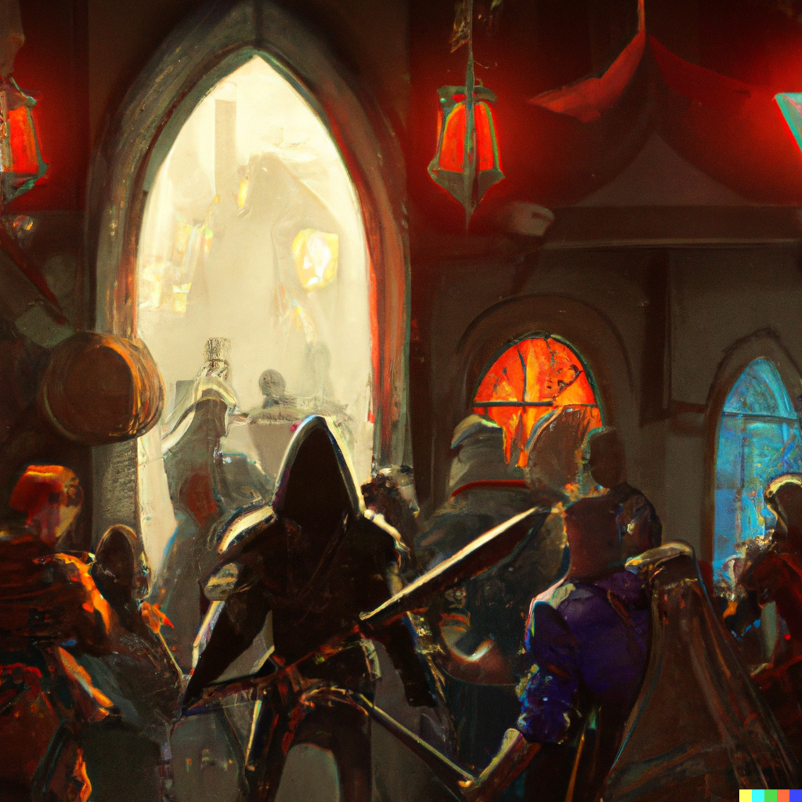

Eighth Session
Unfinished Business
Summerday +318 hours
Dramatis Personae
- Actias Aureus, a 5th-level Tiefling Warlock
- Benjamin, a 5th-level Wood Elf Ranger
- Calmul Rhoqiroth, a 5th-level Dragonborn Artificer
- CoralKing, a 5th-level Gnome Monk
- Geral Bryn, a 5th-level Human Fighter
- Orky, a 5th-level Half-Elf Paladin
- Steve, a 5th-level Halfling Rogue
- Tasbros, a 5th-level Sky Elf Sorcerer
- Tysnera, a 5th-level Sky Elf Wizard
- Viker, a 5th-level Eladrin Druid
- Wulrif, a 5th-level Human Warlock
From the journal of Dame Orky
The group decides to search the castle, starting with the Southwest corner. We find some Shortbow arrows and ragged bedrolls that stink. In a large room we find many weapons (Morning stars, Long swords), including a finely-wrought Quarterstaff. Actias picks it up and it's lighter than it looks. We determine that it’s a +1 Quarterstaff, so we give it to Actias.
In the large main suite we find a property deed. It names Magus Arnin as the owner and seems to be written on brand new, faintly magical, parchment. The deed is registered in Neverwinter. Geral rolls it up and takes it with us.
Wulrif and others investigate the remaining rooms. In one, Tasbros finds an old brazier. Steve pokes at the pile of coal underneath it, and Wulrif uses Mage Hand to rummage through it. There's a bloody cloth wrapped around a golden statue of an Elf with his wings outstretched. We detect Divination magic on it. Wulrif tells everyone else not to touch it, but Actias has already grabbed it.
What is your question?
Actias hurriedly shoves the statuette into his backpack.
We investigate the center most Northern room.
This chamber occupies the northern tower of the castle. A stone altar stands in the middle of the room, covered with bloodstained black cloth. Golden ritual implements—a chalice, a knife, and a censer—are carefully arranged on top of the altar. Two archways to the south are covered with heavy curtains.
Wulrif uses his Mage Hand to put them in his bag. I sense great evil in this room, but neither Benjamin nor I detect any Undead. Wulrif investigates the altar further and doesn’t find anything. CoralKing produces the surprising insight that the altar isn’t magic per se, but the traumatic events that took place there left an aura.
300 XP
We all have a long rest.
Our plan is to go back to Phandalin to return Gundren, maybe head to Tresendar Manor, and then proceed to Neverwinter to claim the ruined castle.
On our way back, a young Green Dragon swoops down on us from behind, ambushing us with it's Poisonous breath weapon, doing 26 damage to everyone who succeeds their saving throws! For those who didn’t, Actias and I, we take 52 damage and get knocked down. The Dragon swoops around for a second pass ...

Round 1
We decide to scatter since we are in the middle of the plains between Neverwinter Wood and the Triboar Trail.
- Benjamin runs away and shoots his Longbow, but misses. He hits with his second shot and does 10 damage.
- Steve moves 25 feet in the opposite direction and shoots his Shortbow, hitting for 6 damage. He also hides, strategically. The Dragon needs a 22 to spot him.
- CoralKing runs towards Benjamin and holds his action until the Dragon is within range.
- Actias critically fails his death saving throw.
- The Dragon swoops in and attacks Tasbros, luckily missing with a bite and claw attack, doing 9 HP damage with the other claw. It breathes in deeply ...
- Viker summons her Unicorn spirit totem and casts Cure Wounds on Actias, bringing him back from the brink of death with 12 HP of healing; everyone else is healed 5 HP.
- Calmul communicates with the Dragon in its native language:
Please! I have so much to learn from you!
Faugh! I'm merely snacking on a few Half ....
- We have 4 Elves (Viker, Tasbros, Tysnera, Benjamin), and I'm HalfElven. Calmul next attempts to be intimidating and fails.
- I'm prone, so I get up and use Misty Step (2 Mana) to Teleport behind a tree.
- Wulrif attempts to barter with the Dragon, but it's not interested.
- Geral shoots the Dragon once and uses Commander's Strike on Benjamin. Geral hits and deals 4 damage. Benjamin also hits and deals 18 damage!
- Tysnera casts Lightning Bolt (8d6 damage!!!) and deals 26 damage! I peek out from behind my tree and silently cheer!
- Tasbros casts Chromatic Orb and deals the Dragon 13 damage.
Round 2
- Benjamin shoots his Longbow twice and hits for 18 damage. The Dragon is starting to get very mad at Benjamin.
- Steve stealthily shoots the Dragon with his bow and rolls a critical hit on a Sneak Attack for 29 damage!
- CoralKing throws his javelin at the Dragon and hits for 10 HP of damage.
- Actias turns Tysnera invisible and runs away.
- The Dragon puts on a burst of speed and flies 160 ft away!!!
- Viker heals me for 17 HP and everyone else 5.
- Calmul is beside himself.
- I walk towards it and Command the Dragon to halt. It ignores me.
- Wulrif pursues the Dragon, attempting to hit it with Eldritch Blast and failing.
- Geral gives Actias 4 temporary hit points.
- Tysnera stays invisible and recovers.
- Tasbros chases the Dragon and casts Fireball. The Dragon just barely escapes the direct blast, taking 16 damage.
Round 3
- Benjamin pursues and shoots his bow, dealing 11 damage.
- Steve shoots and misses.
- CoralKing recovers his javelin.
- Actias pursues with Eldritch Blast and misses.
- The Dragon flies out of range, trailing smoke.
1,000 XP
We all take a short rest.
"We have a problem," says Viker.
We all look back and see that Gundren (and Snaga) are dead. Gundren was supposed to lead us to Wave Echo Cave. Viker has a Scroll of Revivify and asks if we want to use it on him. We all begrudgingly agree, so Viker works on that for 10 minutes.
Gundren wakes up. "What happened?"
"You lost", replies Wulrif.
"Thank you for saving my life, " says Gundren, bowing. "We Dwarves always repay our debts. When we find my brothers in Wave Echo Cave and restart Phandelver Mine, you shall have 10% of the proceeds.
"Sounds good to us", replies Geral.
Phandalin seems oddly deserted ...
There are a couple of Dwarven mercenaries outside of the bank, but otherwise no one is in sight. Gundren wants to go to the Townmaster's Hall to greet Sildar.
"You have rescued my old friend", says Sildar. "I will pay you the reward we agreed to."
"We also have your armor and sword", says Geral.
"Indeed? That is most welcome news! The sword is an heirloom of my family, but I think that a fellow Crusader might make better use of the armor than I ..."
"What happened to the townsfolk?", I ask.
"Ah, well, the Redbrands have been carrying off the folk to slavery, I fear. Held in the basement of Tresendar Manor until they conclude their foul business with the Hobgoblins and Bugbears."
"We should have dispatched this grave injustice when we were here last," I say. "You have my solemn Oath that we will defeat these villains."
"Blessings upon you! I do not know how they swell their numbers, but you should find Farmer Alderleaf. She is both cunning and practical, and may know something to aid in your quest."
The farm looks like it hasn’t been used in awhile, but the house looks strong. Geral knocks on the door, and Qelline Alderleaf, a Halfling, answers. She invites us in for a hearty feast. We are grateful and eat, but CoralKing remains hesitant and stands in the corner. She says her son, Carp, might know a secret way to get in the castle. Carp’s friend, Reidoth, is a Druid, and told her about the Undead in the Manor. He seems to have been lured away to Thundertree to deal with a Dragon. The Redbrands are well-equipped and led by a Wizard, Glasstaff.
We travel with Carp toward the manor but he is concerned about the noise from our heavy armor. He says if we can just get to this tunnel, we should be good from there. We take off our clanking armor. The tunnel leads to a storeroom but Carp says there’s a big floating creature in there. Wulrif tries to get Carp to visualize it and then reads his mind, but Carp had fled before he'd gotten a good look at it.
Wulrif and Actias confer, saying it’s not a Death Tyrant. I think that's good news? We all discuss and decide it would be best to approach and attempt to negotiate with it, as opposed to coming in hot through the front door. The Redbrand we interrogated had said they avoid the Beholder, so it and the Redbrands may not have aligned agendas.
We crawl through the tunnel, single file, which is skillfully constructed. We approach the Beholder, but it seems quite mad, rambling gibberish and strange tongues.

"What are you doing here?" it says, finally, in Common.
"We're just passing through to get to the Wizard," says Geral.
"I don't care but don't touch the Precious!"
"What's the Precious?"
"The thing I must guard since my summoning. But I don't want to guard it. I don't have to guard it if it's gone, so maybe you could take it and I could leave this place! Except then I'd have to kill you all. Will you take it?" it asks eagerly.
"Can you give it to us?", asks Wulrif.
"I would if I could, but my Wizard won't let me."
"Maybe you're hungry?" asks Actias.
"Oh, no, I make my own food. Are you hungry?"
Ten stuffed turkeys with all the fixings on plates materialize in front of us.
"That's not my kind of food ..." It conjures a pile of something foul-smelling and wriggling, proceeding to slurp the things down with great gusto.
Wulrif studies it really intently. Suddenly, he gives a shriek as if his mind has suddenly grasped things never meant for Human understanding. Wulrif begins greedily grubbing down the same nauseous slush as the Beholder.
"Ah, now you understand something of what really nourishes us!" It nods sagaciously.
"Ugh, Wulrif, what are you doing!?" exclaims Geral. He manages to pull Wulrif away from his feast, the mad light fading from Wulrif's eyes.
I think we lost Tysnera and Tasbros here.
We are in a crevice which is unusually cold, and it’s a 20 foot climb into the basement of the manor. Actias casts Mold Earth to make a very convenient ramp for us to walk up. Topside, the crevice is spanned by two narrow wooden bridges. Viker transforms into a mouse and heads West, finding a room with 8 Redbrands. She goes into the room across the hall and sees 12 Redbrands, eating. One of them throws a dagger at her in disgust. Viker skitters away and reports back. We confer.
I'm going to block the middle of the hallway to control how many can attack us at once. Actias makes the hallway behind us difficult terrain to hopefully slow the others down. CoralKing stays at the rear of the party to defend us from that direction.
Round 1
- Viker casts Moonbeam (what is a Moon?) on the spot where the first Redbrand appears. Ghostly flames envelop him, screaming, as he takes 14 damage.
- Calmul's Musket misfires and dumps black powder everywhere.
- Wulrif Hexes and Eldritch Blasts the Redbrand. He goes down.
- CoralKing holds his action.
- Geral holds his attack.
- I hold my attack.
- Actias holds.
- Another Redbrand runs out into the Moonbeam; he goes down. A very loud alarm rings throughout the whole manor. Another Redbrand comes out of the room, and I slice him in half. Yet another Redbrand gets flamed by Viker's Moonbeam.
- Half of the Redbrands start to come out the back hallway, so CoralKing moves to face them. A Redbrand shoots and hits him for 4 HP damage.
- Geral shoots and crits the guy over my shoulder.
- Actias backs up to come help CoralKing.
Round 2
- Viker maintains concentration on Moonbeam.
- Calmul repairs his Musket.
- Wulrif backs up to get a better view of both streams of Redbrands, over one of the bridges. It collapses and he falls down into the chasm, taking 4HP damage.
- CoralKing moves back to get in a more strategic position and holds his action.
- A Fireball goes off! But everyone makes their saving throws, only taking 16 damage.
- Geral holds his action.
- I hold my action.
- Actias forks his Eldritch Blast. He lands both and does 20 damage! That Redbrand goes down, as does the one coming at CoralKing.
- CoralKing hits the new approaching Redbrand in front of him, doing 6 damage.
Round 3
- Viker moves through the hallway to move her Moonbeam into the room with most of the Redbrands. One of them takes an opportunity attack as she moves by and crits her with 12 damage. She manages to maintain her Moonbeam.
- Calmul shoots a Redbrand and deals 5 damage.
- Wulrif seems to be talking again with the Beholder in the chasm.
- CoralKing Flurries 3 hits, but they all miss. Then he and Actias make Wisdom saving throws, succeeding. Something was trying to paralyze them.
- Geral moves up to protect Viker and hits a Redbrand for 8 damage. He uses an Action Surge and hits for another 8 HP.
- I move to protect Viker and hold my action.
- Actias splits his Eldritch Blast to hit 2 Redbrands. He misses one but hits another for 7 damage, knocking him down. He retreats across the remaining bridge and finds a HUGE new group of Redbrands, including the Wizard, lurking just around the corner!
- Actias immediately gets hit by 2 swords, taking 12 damage total. CoralKing takes 15 damage from a volley of arrows and Fades Away. Calmul takes more arrows for 13 HP. Actias does a quick Rebuke on one of the archers, doing 7 damage.
Round 4
- Viker moves her Moonbeam and kills a Redbrand. She uses a Bonus action to say a Healing Word on Calmul for 9 HP.
The players have decided to take a pause here and take up the fight again next week.
